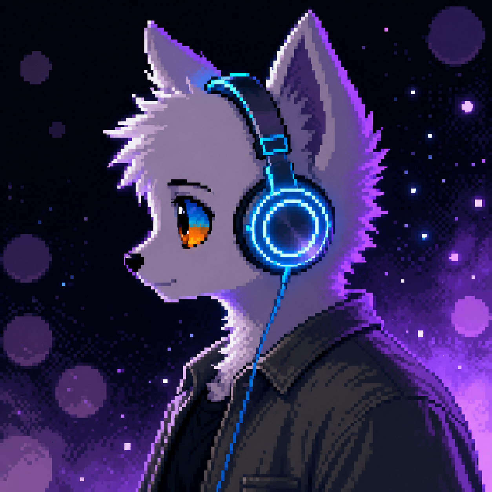

tuning the frequency...
Estudante de Análise e Desenvolvimento de Sistemas. Apaixonado por código limpo, interfaces sensíveis e por aquele momento em que uma ideia ganha vida na tela.
“a tecnologia mais bonita é aquela que faz alguém se sentir.”

Sou um estudante de Análise e Desenvolvimento de Sistemas que começou a programar pelo simples encantamento de ver pixels obedecerem. Desde então, cada projeto virou uma pequena carta de amor para a tecnologia.
Gosto de pensar em código como artesanato — algo que merece cuidado, ritmo e estética. Trabalho na interseção entre engenharia e design, buscando soluções tão bonitas quanto funcionais.
Meu objetivo é virar um desenvolvedor full-stack capaz de construir produtos completos — dos primeiros wireframes ao último commit — sempre com a trilha sonora certa tocando ao fundo.
do back ao front, com curiosidade.
interfaces que respiram e contam histórias.
o que há de novo, sempre.
transformar ideias em coisas reais.